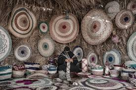

Traditions passed through generations are like threads in a grand tapestry, each one carrying a piece of history, wisdom, and identity. In the heart of Najd, where golden sands meet endless skies, these traditions are not just remembered—they are lived. And no one understood this better than Layla, a young woman born into a family of weavers, whose ancestors had spun tales into fabric for centuries. Layla had grown up surrounded by looms and threads of every hue, each pattern a silent story, each stitch a whisper of the past. But as the world around her changed, the art of weaving was fading. The younger generation no longer saw the patterns as lessons, nor the textiles as sacred artifacts of their lineage. Determined to keep her heritage alive, Layla set out on a journey across the Najd to rediscover the woven stories that had once defined her people. Her first stop was Diriyah, the historic cradle of her ancestors. There, she met an elderly woman named Umm Noura, whose hands had spent a lifetime weaving the history of her tribe. Sitting beside her, Layla learned how certain patterns represented great battles, while others symbolized love, loss, and hope. "A weave is more than fabric, my dear," Umm Noura told her. "It is a way of remembering. Every knot, every twist, carries the voices of our past." Encouraged by this newfound wisdom, Layla traveled deeper into the heart of Najd, venturing into remote villages where weaving traditions still lingered in the memories of the elderly. In one such village, she met Abu Rashid, a former camel herder who once traded embroidered textiles along the ancient trade routes. He spoke of a time when textiles were more than just clothing; they were a form of communication, a way for families to express their histories and social standing. He showed Layla a centuries-old *Al-Sadu* cloth, its red and black patterns still vibrant despite the passage of time. “This fabric,” he said, running his fingers over the intricate designs, “tells the story of my great-grandmother’s journey across the desert. She wove it as she traveled, each pattern marking a different stage of her life—her childhood in the oasis, her marriage in the dunes, and the long, difficult winters she endured.” Layla carefully documented his words, sketching the patterns and writing down their meanings in a small leather-bound notebook. She realized that preserving traditions was not just about learning them—it was about sharing them. It was about ensuring that each piece of knowledge found its way to future generations. As her journey continued, Layla encountered a group of young women in a village near Buraydah who were eager to learn the art of weaving but had never been taught. Seeing their enthusiasm, she stayed for several weeks, teaching them the techniques passed down by her ancestors. Under her guidance, they created vibrant textiles woven with the stories of their own families. It was in this moment that Layla truly understood the power of her mission—traditions did not fade unless people allowed them to. If they were nurtured, they could grow, evolve, and take on new life. When she finally returned home, Layla began weaving a new kind of tapestry, one that blended old stories with new visions. She held storytelling nights where the elderly recounted their ancestors' lives, and she created a collection of fabrics that told the story of Najd itself. She partnered with artisans and historians, working tirelessly to document patterns before they were lost to time. Her work soon gained recognition, not only in her village but across the country. Historians, artists, and scholars came to see how Layla had revived an ancient craft, not just in textiles but in spirit. Through exhibitions and workshops, she ensured that the art of weaving would not be forgotten. People once again saw the value in their heritage, embracing the beauty of their ancestors' stories woven into fabric. One evening, as Layla sat before her loom, she realized something profound. The woven stories of Najd were more than just a reflection of the past—they were living testaments to a culture that refused to be forgotten. And as she passed her hands over the vibrant threads, she knew that every stitch she wove would carry the voices of generations yet to come. In the end, Layla was not just a weaver; she was a storyteller, a guardian of tradition, and a bridge between the past and the future. And so, the woven stories of Najd lived on, their patterns stretching far beyond the desert, reaching the hearts of those who wished to listen.

Woven Stories of the Najd
👁️ Views: 674
❤️ Likes: 344
📤
Comments